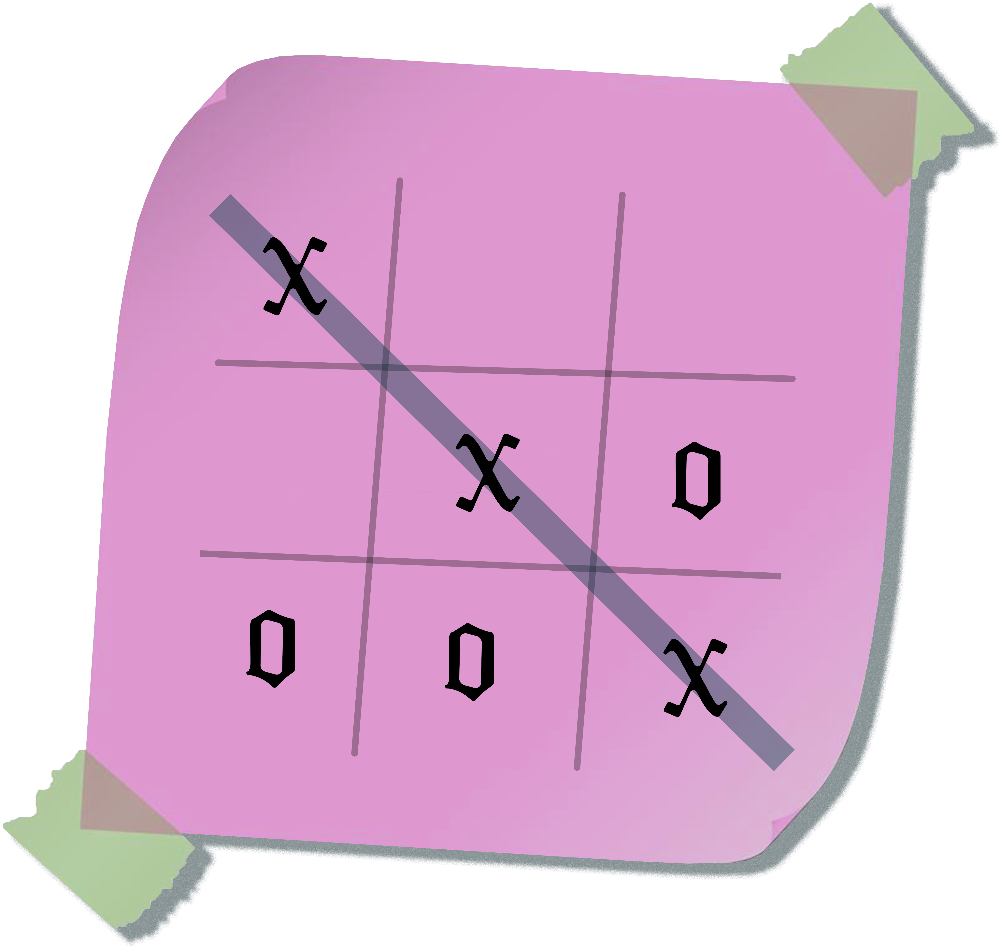

passcode required
The International
Tic Tac Toe Championship
some stuff I saw on my feeds before I offloaded my apps: I saw matt healy eat raw steak on stage (worms!) and how katy perry voted for a republican in the elections. Apparently Harry styles is also getting cancelled, but my 1D phase ended a decade ago so idc.

sore loser
I didn't have much digital content for this week since I deleted most of my social media apps because I kept procrastinating on them. My screentime went down to 6hr 23min per day for this week. Since I don't have photos from my feed this week, enjoy this photo of me as the statue of liberty after I found out my suitemate tested positive for covid. (i was in shambles)